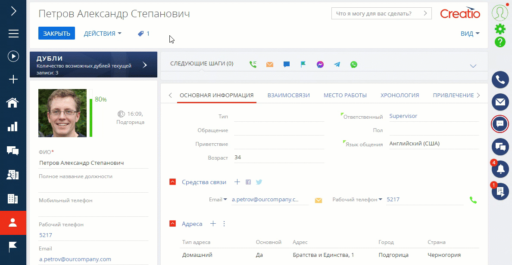
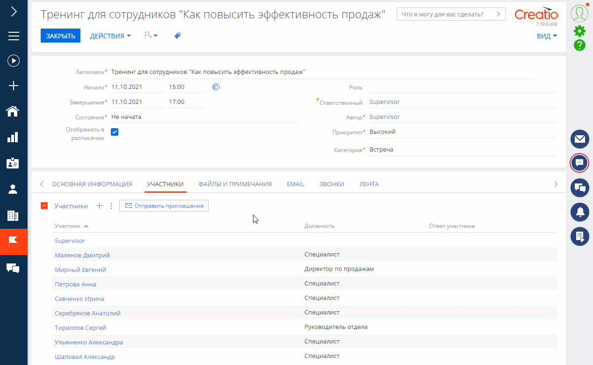
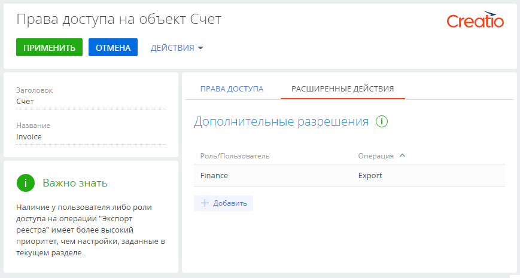
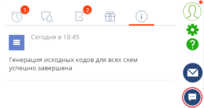

Дата релиза
Представляем обзор изменений и улучшений, реализованных в Creatio версии 7.18.4.
Инструкция по обновлению для приложений on-site доступна в отдельной статье.
Low-code платформа
Базовые возможности платформы
Поиск дублей
- Реализована возможность узнать о наличии вероятных дублей непосредственно на странице записи. Новый виджет позволяет сразу перейти к просмотру и слиянию дублей открытой записи, не запуская поиск дублей для всего раздела. Виджет доступен для разделов Контакты и Контрагенты, если в них есть активные правила поиска дублей и настроен глобальный поиск дублей. В версии 7.18.4 функциональность доступна в режиме бета-тестирования. Чтобы оценить новые возможности поиска дублей, запросите включение функциональности в службе технической поддержки. Будем благодарны за обратную связь. В открытом доступе функциональность появится уже в ближайших релизах.
Пример перехода к дублям записи со страницы контакта
Интеграции
Синхронизация календарей Exchange
Обновлен механизм синхронизации Creatio с календарями Exchange:
- При синхронизации данных в любом из направлений загрузка встреч выполняется в режиме реального времени и не требует дополнительного обновления страницы.
- Появилась возможность отправлять приглашения участникам встречи со страницы активности в Creatio и видеть их ответы на детали Участники.
- После отправки приглашений участникам право на редактирование встречи остается только у ее организатора.
- В случае изменения деталей встречи, например, времени или места проведения, описания, списка участников, обновленные приглашения будут отправлены участникам автоматически.
- Если участники не ответили на приглашение, вы можете повторно отправить его со страницы встречи в один клик.
Отправка приглашений участникам встречи
Администрирование
Настройка прав доступа
- Появилась возможность настраивать права на экспорт реестра для отдельных объектов. Например, можно настроить сотрудникам отдела продаж доступ на экспорт счетов, но запретить экспорт клиентской базы. Предоставить право на выполнение экспорта можно как для ролей, так и для отдельных пользователей. Настройка выполняется в разделе Права доступа на объекты.
Пример настройки прав на экспорт реестра
Производительность
Увеличение быстродействия приложения
- Скорость загрузки динамических кейсов и задач на панели действий увеличена в 10 раз.
- Появилась возможность ускорить загрузку страниц приложения. Это реализуется благодаря перенаправлению Select-запросов аналитики и динамических групп на реплику базы данных. Для перенаправления запросов необходимо внести изменения в web-config приложения и настроить подключение к реплике базы данных в файле ConnectionStrings.config. На текущий момент поддерживается схема: один мастер и одна реплика.
Инструменты разработки
Генерирование исходного кода
- Генерирование исходного кода для всех схем теперь выполняется в фоновом режиме. Выполнение операции не повлияет на работу основных пользовательских функций, но становится недоступным запуск генерации исходных кодов и компиляции приложения. При попытке запуска этих действий система уведомит о выполняющейся операции. Также в период генерации исходных кодов всех схем не рекомендуется выполнять работы, требующие компиляции приложения, например устанавливать приложения и расширения, настраивать интерфейс и бизнес-логику. Уведомление о завершении генерации отобразится в коммуникационной панели.
Уведомление о результатах генерации исходного кода схем